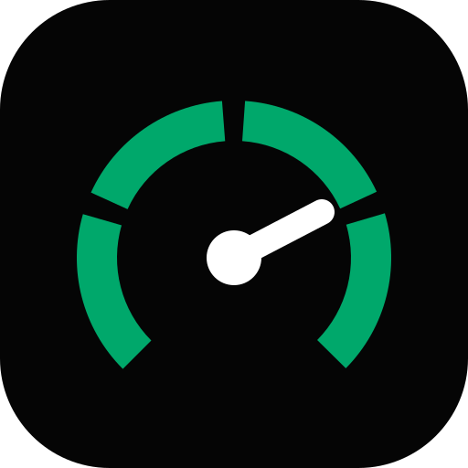
MotorPalA vehicle ownership companion for Sri Lanka, first built as “CarBook” and now becoming MotorPal. This document explains the problem we are solving, the app and website as they stand today, the brand, the marketing material, the business plan, and everything that is still work in progress.
MotorPal keeps a Sri Lankan vehicle’s health, deadlines and records in one place, explains warning lights and mechanic talk in plain words, and tells the owner what to ask at the garage. It is built for owners who are not vehicle experts but want to know they are doing everything right.
Owning a vehicle in Sri Lanka still runs on memory, paper and trust. Most owners are not mechanics, and they feel it.
The revenue licence can only be renewed with a valid emission test and insurance. Miss one date and the whole chain stalls, usually discovered at the worst moment. Electric and hybrid vehicles skip the emission test, which adds to the confusion.
Oil, battery, brake pads, tyres, filters, fluids and wipers all wear out on different schedules, by distance or by time. Nobody can keep track of them in their head.
An orange light comes on and owners panic, ignore it, or search online at midnight. At the garage, phrases like “bushes are finished” leave them unable to judge what they are paying for.
Service history sits in a glovebox book or the garage’s memory. Warranties and receipts get lost. That costs money at resale and when claiming a warranty.
MotorPal’s promise: one place that keeps your vehicle on track, explains what it is telling you, and helps you ask the right questions. It suggests and explains; it never diagnoses. Brakes and tyres always point to a professional check.
| Who | What they need |
|---|---|
| Everyday owners who are not car people | To know they are doing everything right, without learning mechanics. One clear next step, plain words, details only when asked. |
| New owners | Over 360,000 vehicles were newly registered in 2025 after imports reopened (reported figure, to be confirmed). Fresh owners, fresh records. |
| Women who manage their own vehicle | Confidence at the garage without depending on a brother, husband or father. A theme in the marketing. |
| Car, van, motorbike and three-wheeler owners | The app adapts: parts and lights that do not apply to a vehicle are hidden. |
| Sinhala, Tamil and English speakers | All wording sits in one file, ready for translation (in progress). |
Market size used so far: about 8.5 million registered vehicles in Sri Lanka (mid-2025), from Department of Motor Traffic and Central Bank figures as reported in the press. These need confirming against official statistics before investors see them.
The app has four tabs and a side menu. Its look is like a modern money app, in the MotorPal colours: a near-black page, dark grey cards, mint for actions.
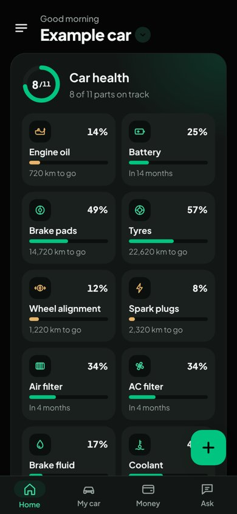
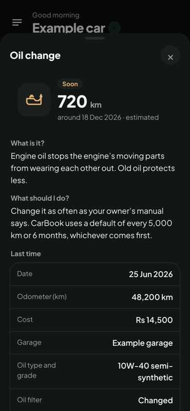
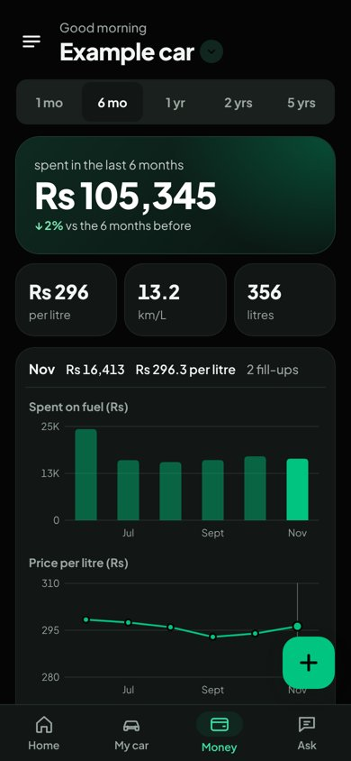
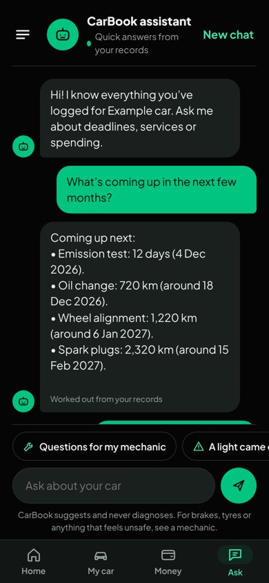
| Area | What it does |
|---|---|
| Home | Top to bottom: Car health, the single most urgent item, Coming up, quick actions (fill-up, service, document, light, odometer), Your records, Recent activity. |
| My car | Vehicle details, papers (emission test, insurance, revenue licence, driving licence, warranties), maintenance, record lists, settings, export and import. |
| Money | Fuel spent like a bank balance, price per litre, km per litre, charts from 1 month to 5 years compared with the period before, and service spending. |
| Ask | A chat about the owner’s records (“When is my next oil change?”), quick-question chips, and “Questions for my mechanic”. |
| Side menu | Every area in one list, including the dashboard lights guide, quick adds and settings. |
| Everywhere | One + button adds anything. Works offline, no sign-up, data stays on the phone, several vehicles per owner, an example vehicle to try it. |
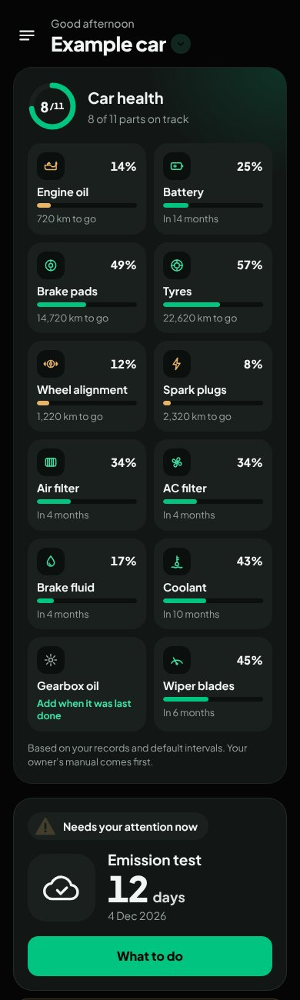
Car health is the heart of the app and the first thing on Home. It answers: “Is my vehicle OK, and what needs doing next?”
| Part | Default | Part | Default |
|---|---|---|---|
| Engine oil | 5,000 km or 6 months | Air filter | 15,000 km or 12 months |
| Battery | test from 3 yrs, replace ~4.5 yrs | AC filter | 15,000 km or 12 months |
| Brake pads | 30,000 km | Brake fluid | 40,000 km or 2 years |
| Tyres | 40,000 km or 5 years | Coolant | 40,000 km or 2 years |
| Wheel alignment | 10,000 km or 12 months | Gearbox oil | 60,000 km or 4 years |
| Spark plugs | 30,000 km | Wiper blades | 12 months |
These are defaults only. Every part’s page says the owner’s manual comes first. Gearbox oil intervals vary a lot, so its page tells owners to ask at their service.
Emission test, then insurance, then revenue licence. The app knows the order, counts each date down, shows what to book next and keeps every past renewal in the document’s history. Electric and hybrid vehicles are exempt from the emission test automatically.
The single most urgent item sits in a big card on Home. After several rounds with the founder, “needs attention now” became a plain dark card with no red at all, marked only by a larger caution triangle that blinks like hazard lights, so the warning fits the black and mint look. “Coming up soon” and “on track” show a soft honey or mint dot and outline.
Swipeable cards for the next reminders, and a year-ahead plan with estimated service dates.
One place for the vehicle’s paperwork history, shown on Home as three tiles:
Records are never silently overwritten: edits keep a “last changed” time and renewals keep the old expiry. Every record already carries what later sharing needs (a vehicle id, a source and a private-by-default setting).
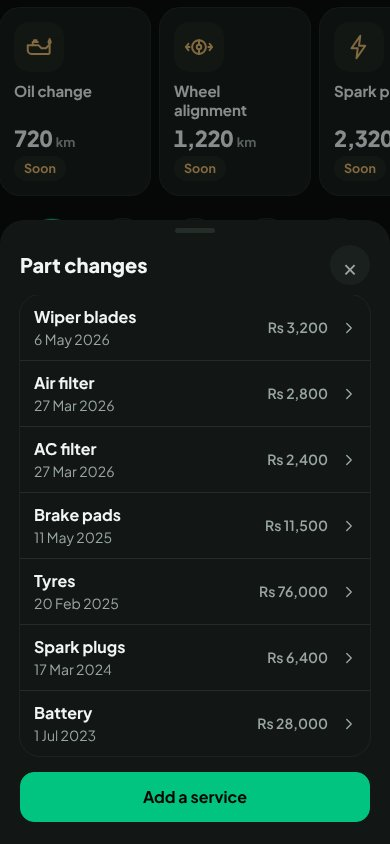
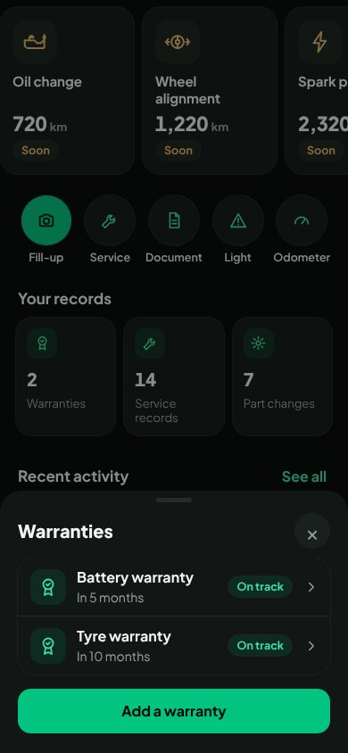
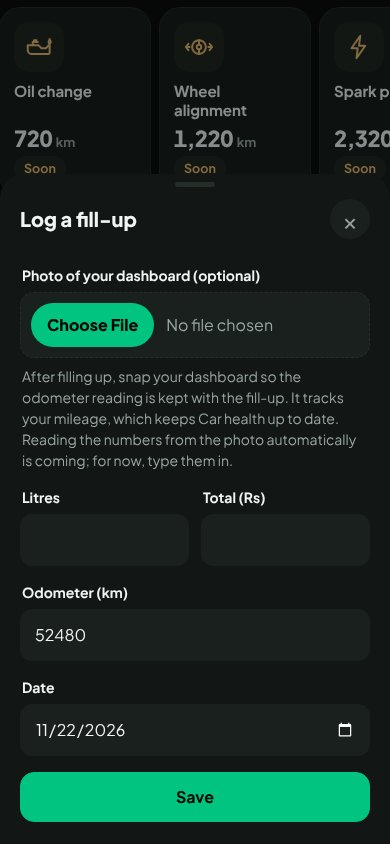
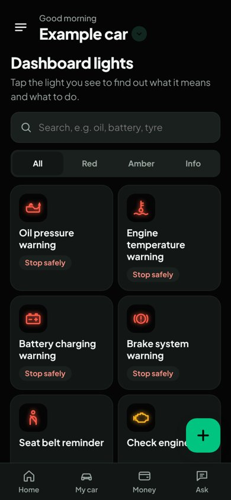
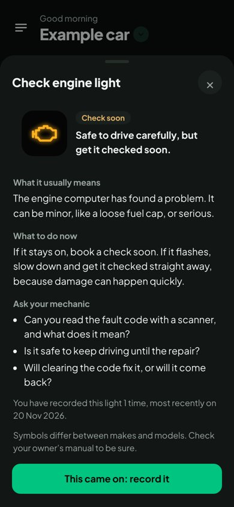
Each light has its symbol in its real colour, how urgent it is (red: stop safely; amber: check soon; green or blue: information), what it usually means, what to do now and what to ask the mechanic, plus “check your owner’s manual”.
It covers cars, vans, motorbikes and three-wheelers, and diesel, hybrid and electric vehicles. Each owner sees the lights for their vehicle first; the rest appear when they search or filter.
Owners can record a light the moment it comes on. It then shows on Home until marked fixed, and feeds the mechanic questions and the Ask chat.
A chat about the owner’s own records: deadlines, services, fuel and spending. Today it answers common questions with simple rules on the phone. Inside the claude.ai preview it gives real AI answers. “Questions for my mechanic” turns the records into questions, each showing the record it is based on. Real AI for everyone needs the small server planned in step 4 of the plan.
Fuel is a smaller feature now, kept in the Money tab rather than on Home. Every fill-up asks for a photo of the dashboard first, so the odometer reading is kept with it: that mileage keeps Car health up to date. Money shows fuel spent like a bank balance, price per litre, km per litre, charts for 1 month to 5 years compared with the period before, and what was spent on servicing. Comparisons only show when the records cover the whole earlier period, so numbers are never misleading.
Fuel economy assumes the tank is filled each time. Reading numbers from photos automatically is planned; for now owners type them in.
| Question | Answer |
|---|---|
| What is it? | A web app that installs like a phone app (a “progressive web app”). Plain HTML, CSS and JavaScript, no build step, so it is simple to change. |
| Where is the data? | Only on the owner’s phone. No account, no server. Owners can export a backup file and import it again. Clearing browser data erases it, so cloud backup is planned. |
| Does it work offline? | Yes. An offline helper keeps a copy on the phone and fetches updates when online. |
| How does it know what is due? | A “rules engine”: plain rules for each part and document (default intervals, the deadline chain, km per day). AI will word things, but due dates always come from the rules. |
| Where is the wording? | Every word sits in one file (strings.js) with English, Sinhala and Tamil sections, so translators work in one place. |
| Where is it hosted? | Free on GitHub Pages from the repository 3220interflash-sys/CarBook. Every change is saved as a version with a note. |
Name. The app began as CarBook. MotorPal was chosen because “motor” covers cars, bikes, three-wheelers and vans and already feels official in Sri Lanka. Alternatives considered: Vahana, MotorMithra, Machan Motors, PitStop.
Logo, “Four pillars”. A gauge whose dial is four segments, standing for reminders, service records, fuel and costs, and warranties, with the needle in the green. Chosen after exploring a pulse line, a talking gauge, a gauge with a face and clock hands.
Colours. Black #050505, deep mint #00A86B, white. Font: Plus Jakarta Sans.
Files. Icon, logo on white and on black, mark only: as SVG, PNG and Canva-ready PDF, plus a Logo Studio page to try colours.
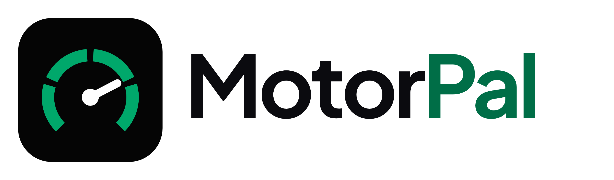
Before launch: check the name on the trademark register (National Intellectual Property Office), the Play Store, the web address and social handles. An unrelated fuel-price app called “Motorpal” exists on Apple’s App Store.
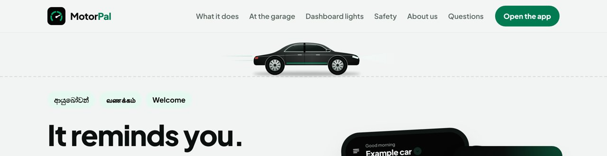
One page, now branded MotorPal with the new logo, in the same black and mint. It explains who we are and why the app is a must-have: “It reminds you. It also tells you what your car is trying to say.” Sections cover the deadline chain, what the app does (with real app screenshots), the dashboard lights, mechanic talk explained, who fixes what, safety, about us and questions. A sleek glossy black car drives across under the menu bar.
The website promises two guides that are not yet in the app: “Mechanic talk, explained” and “Who fixes what”. It does not yet describe Car health. Both are on the to-do list.
| Item | What it is | Status |
|---|---|---|
| Investor deck | 20 slides in the style of a modern app pitch deck: the problem, three reasons to download, free Phase 1 versus premium Phase 2, pricing tiers, market, roadmap, team and the raise. Figures the founder must fill are left in [brackets]. | Old colours |
| Executive summary | One to two pages, designed like the deck. | Old colours |
| Project and marketing plan | Where to start, what to research, Sri Lankan competitors, a SWOT analysis, and an organic plan using social media and print only. | Done |
| Instagram posts | 16 English posts (useful, funny, no selling; F1, car-wash myths, floods, beach parking, confident women drivers, cricket and politics), 16 in Sinhala, and 10 Tamil posts with their own Tamil-cinema theme. | Needs review |
| Short videos | Three 20-second vertical videos for Reels, Facebook and WhatsApp Status (the date chain, the orange light, mechanic talk) and a 60-second cut. | Old name |
| One-pagers | A shareable one-page artwork: “Your car, all in one place”, with reminders, service records, fuel and costs, and warranties. A CarBook version and a MotorPal version. | MotorPal ready |
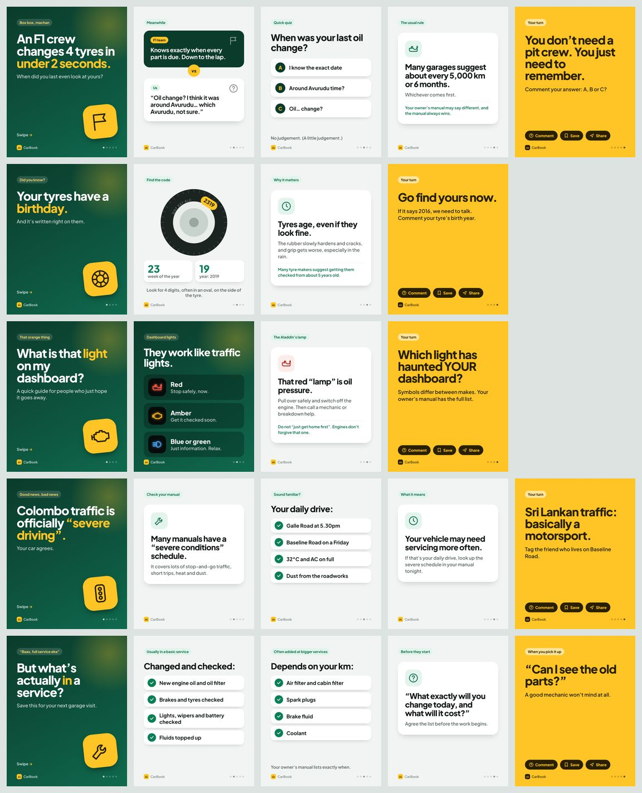
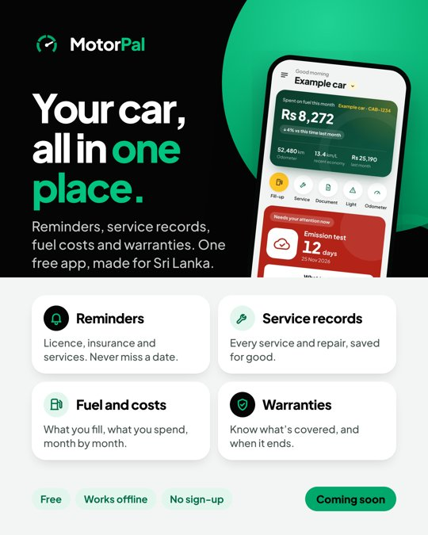
The Sinhala and Tamil text are drafts and need a native speaker. Every Tamil post should carry a clearer Tamil-movie reference (noted for later). All facts in the posts are hedged and should be checked once more before posting.
The owner app stays free so that records keep growing. Money comes from convenience and trust, once owners rely on MotorPal.
| Tier | Price | What it includes |
|---|---|---|
| Free | Rs 0 | Everything in Phase 1 |
| Plus | [to be tested] | AI assistant, photo reading, cloud backup |
| Family | [to be tested] | Plus for several vehicles and family members |
| Partners | Per use | Garages confirm records, buyers pay for history reports, insurers get renewals only when the owner chooses |
Prices are not set. They should be tested with real owners and garages before launch. Sharing and accounts wait for a check against Sri Lanka’s Personal Data Protection Act.
The app’s name and icon, the investor deck, the executive summary, the three videos, the original one-pager and the Play Store screenshots. The website and the MotorPal one-pager are already updated.
| What | Where |
|---|---|
| The app | https://3220interflash-sys.github.io/CarBook/ |
| The website | https://3220interflash-sys.github.io/CarBook/website/ |
| Code and all files | github.com/3220interflash-sys/CarBook (logo in marketing/logo/final, posts in marketing/instagram, videos in marketing/video, one-pagers in marketing/one-pager) |
| Investor deck | claude.ai/artifact/EZeDmWJobdKvvpjmXynyx5 (private until shared) |